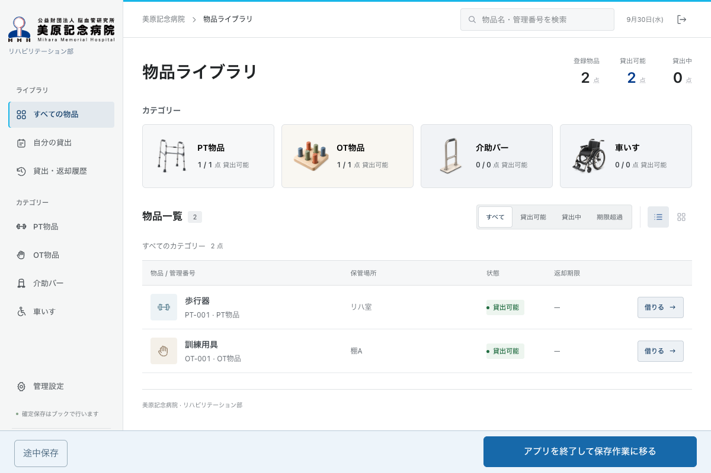

閉じるとき、どの案なら迷わず進められるか
通常UI・OnTime・VBA待機の3案とも、編集中は高さ72pxの薄い一段バーです。保存を始めると案内欄が上へ広がり、主ボタンは同じ位置・大きさのまま切り替わります。
実際の共通UIを撮影した表示プレビューです。準備完了通知は模擬しています。Windows / JUST Calcでの動作・待ち時間は未検証です。

通常UI・OnTime・VBA待機の3案とも、編集中は高さ72pxの薄い一段バーです。保存を始めると案内欄が上へ広がり、主ボタンは同じ位置・大きさのまま切り替わります。
実際の共通UIを撮影した表示プレビューです。準備完了通知は模擬しています。Windows / JUST Calcでの動作・待ち時間は未検証です。
